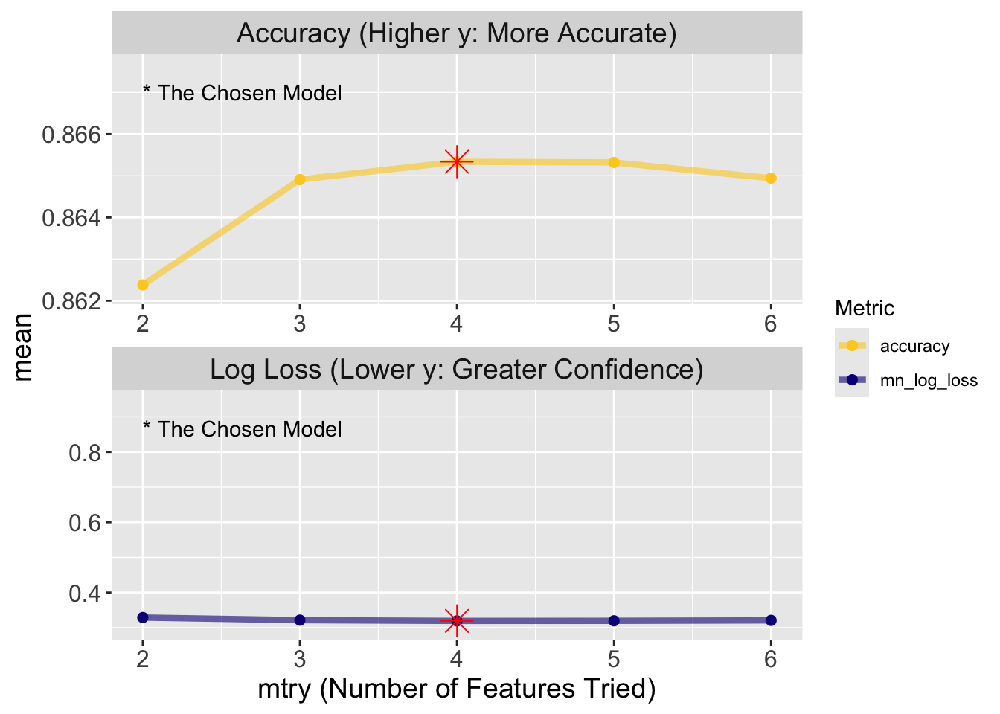

ST558 Final Project - Predictive Modeling of Diabetes Prevalence - Model Fitting and Selection
Purpose: Select the best model for predicting Diabetes
Strategy:
Choose form of model - We chose predictors / features of: HighBP, HighChol, BMI, Age, GenHlth, and PhysActivity based on our EDA
Fit model to data using a classification tree and a random forest tree, per the project requirements
Evaluate the model using log loss metric
Background:
We will perform an evaluation of 2 different model types:
Classification Tree
Random Forest
In our case, all but one of our chosen predictors to tune our hyperparameters are yes/no. Age and General Health are multi-level factors. Age has a 5 year range between less than 18 and over 80 and General Health is a 5 level factor ranging from poor to excellent.
Classification Trees
A classification tree is a decision tree model used for categorical outcomes. It recursively splits the data into groups based on predictor variables, aiming to create regions with similar response values. At each leaf node, it predicts the most common class in that region. It is considered a greedy algorithm, because it only focuses on the best split for a given node without considering the best combination of splits for the entire tree. That is, once a split is made the model doesn’t revisit the node to make any adjustments. We will use a 5-fold Cross Validation and a 70/30 training/test split of our initial data
Random Forest
A random forest is a decision tree model also used for categorical outcomes. A random forest takes samples of multiple subsets by bootstrapping, which is sampling data points in the data set. Sampling with replacement means duplicate data points may appear in the training data set. Data points which are not sampled are held over for testing and are known as “out-of-bag” observations and can be used to evaluate the model’s performance without requiring a separate validation set. For each bootstrapped subset, a decision tree is built. Each tree is grown independently and to a depth either specified or chosen by the modeling framework (e.g. tidymodels). Random forests are considered ensemble models in that they combine the predictions of many individual trees to improve accuracy and robustness. Additionally, the randomness of the bootstrapping helps to reduce overfitting, which is a condition that occurs when the model does a great job of fitting data it has already seen (training data), but does a poor job of generalizing or predicting outcomes for data it hasn’t yet seen (test data/real-world data).
Random forests are a collective of decision trees, while Classification trees as described above are greedy and only deal with the data in top-down fashion.
From ESLII: ch7: if the learning curve has a considerable slope at the given training set size, five or tenfold cross-validation will overestimate the true prediction error. Whether this bias is a drawback in practice depends on the objective. On the other hand, leave-one-out cross-validation has low bias but can have high variance. Overall, five or tenfold cross-validation are recommended as a good compromise: see Breiman and Spector (1992) and Kohavi (1995). Figure 7.9 shows the prediction error and tenfold cross-validation curve
Read in CSV and map factor levels
Code
diabeetus <-read_csv("diabetes_binary_health_indicators_BRFSS2015.csv", show_col_types =FALSE) |>mutate(Diabetes_binary =structure(fct_recode(as.character(Diabetes_binary), "No Diabetes"="0","Diabetes"="1"),label ="Diabetes or Prediabetes"),HighBP =structure(fct_recode(as.character(HighBP),"no"="0","yes"="1"),label ="High Blood Pressure"),HighChol =structure(fct_recode(as.character(HighChol),"no"="0","yes"="1"),label ="High Cholesterol"),CholCheck =structure(fct_recode(as.character(CholCheck),"no"="0","yes"="1"),label ="Cholesterol Check Status", long_label ="Cholesterol Check within Past 5 years"),BMI =structure(as.integer(BMI),label ="BMI"),Smoker =structure(fct_recode(as.character(Smoker),"no"="0","yes"="1"),label ="Smoking Status",long_label ="Have you smoked at least 100 cigarettes in your entire life? [Note: 5 packs = 100 cigarettes]"),Stroke =structure(fct_recode(as.character(Stroke),"no"="0","yes"="1"),label ="Stroke Status",long_label ="(Ever told) you had a stroke"),HeartDiseaseorAttack =structure(fct_recode(as.character(HeartDiseaseorAttack),"no"="0","yes"="1"),label ="CHD/MI Status",long_label ="Coronary Heart Disease (CHD) or Myocardial Infarction (MI)"),PhysActivity =structure(fct_recode(as.character(PhysActivity),"no"="0","yes"="1"),label ="Physical Activity Status",long_label ="Physical Activity in past 30 days - not including job"),Fruits =structure(fct_recode(as.character(Fruits),"no"="0","yes"="1"),label ="Fruit Consumption",long_label ="Consume Fruit 1 or more times per day"),Veggies =structure(fct_recode(as.character(Veggies),"no"="0","yes"="1"),label ="Vegetable Consumption",long_label ="Consume Vegetables 1 or more times per day"),HvyAlcoholConsump =structure(fct_recode(as.character(HvyAlcoholConsump),"no"="0","yes"="1"),label ="Heavy Drinker",long_label ="Heavy drinkers (adult men having more than 14 drinks per week and adult women having more than 7 drinks per week"),AnyHealthcare =structure(fct_recode(as.character(AnyHealthcare),"no"="0","yes"="1"),label ="Healthcare Coverage",long_label ="Have any kind of health care coverage, including health insurance, prepaid plans such as HMO, etc"),NoDocbcCost =structure(fct_recode(as.character(NoDocbcCost),"no"="0","yes"="1"),label ="Healthcare Cost Unaffordable",long_label ="Was there a time in the past 12 months when you needed to see a doctor but could not because of cost?"),GenHlth =structure(fct_recode(as.character(GenHlth),"excellent"="1","very good"="2","good"="3","fair"="4","poor"="5"),label ="Overall Health",long_label ="Overall Health (scale 1(excellent)-5(Poor)"),MentHlth =structure(as.integer(MentHlth),label ="Poor Mental Health Days",long_label ="how many days during the past 30 days was your mental health not good?"),PhysHlth =structure(as.integer(PhysHlth),label ="Poor Physical Health Days",long_label ="how many days during the past 30 days was your physical health not good?"),DiffWalk =structure(fct_recode(as.character(DiffWalk),"no"="0","yes"="1"),label ="Difficulty Walking Status",long_label ="Do you have serious difficulty walking or climbing stairs?"),Sex =structure(fct_recode(as.character(Sex),"female"="0","male"="1"),label ="Sex",long_label ="Sex"),Education =structure(fct_recode(as.character(Education),"None"="1" ,"Elementary(Grades 1-8)"="2","Some HS (Grades 9-11)"="3","HS Grad"="4","Some college (1-3 years)"="5","College graduate"="6"),label ="Education Level",long_label ="Education level (EDUCA codebook scale)"),Age =structure(fct_recode(as.character(Age),"18-24"="1","25-29"="2","30-34"="3","35-39"="4","40-44"="5","45-49"="6","50-54"="7","55-59"="8","60-64"="9","65-69"="10", "70-74"="11", "75-79"="12",">80"="13"),label ="Age Category (5 year)",long_label ="13-level age category (_AGEG5YR see codebook)"),Income =structure(fct_recode(as.character(Income),"<10k"="1","10k-15k"="2","15k-20k"="3","20k-25k"="4","25k-35k"="5","35k-50k"="6","50k-75k"="7",">75k"="8"),label ="Income Level",long_label ="Income scale (INCOME2 see codebook)") )
Implement the Machine Learning Pipeline for Classification Tree and Random Forest
Split into training and test
Code
set.seed(462)split <-initial_split(diabeetus, prop =0.7)train <-training(split)test <-testing(split)# Create 5XCV splits of traindiabeetus_folds <-vfold_cv(train, v =5)
Recipe Creation with 8 predictors based on EDA
HighBP
HighChol
DiffWalk
Age
HeartDiseaseorAttack
Smoker
General Health
BMI
Code
# Create recipe with 8 predictors, based on EDA selection# 6 Predictorstree_rec1 <-recipe(Diabetes_binary ~ HighBP + HighChol + DiffWalk + Age + GenHlth + BMI + HeartDiseaseorAttack + Smoker , data = train) |>step_dummy(HighBP, HighChol, DiffWalk, HeartDiseaseorAttack, Smoker, Age, GenHlth)
Model Setup and Tuning
Decision Tree: tunes cost_complexity and tree_depth parameters
Random Forest: tunes mtry parameter and builds 50 trees
ℹ The workflow being saved contains a recipe, which is 6.16 Mb in ℹ memory. If
this was not intentional, please set the control setting ℹ `save_workflow =
FALSE`.
#Select best model based on log lossbest_tree <-select_best(tuner, metric ="mn_log_loss")#Finalize workflow with best parametersfinal_wf <-finalize_workflow(tree_wkf, best_tree)#Fit final model to training datafinal_tree_fit <-fit(final_wf, data = train)#Print tree modeltree_model <- final_tree_fit |>extract_fit_engine()rf_model <-rand_forest(mtry =tune(),trees =50,min_n =20) |>set_engine("ranger", importance ="impurity") |>set_mode("classification")rf_grid <-grid_regular(mtry(range =c(2, 6)),levels =5)rf_wkf <-workflow() |>add_recipe(tree_rec1) |>add_model(rf_model)control <-control_grid(verbose =TRUE, # Print progress updates during tuningallow_par =TRUE, # Enable parallel processingsave_pred =TRUE, # Save predictions for each resamplesave_workflow =TRUE# Save the workflow for later analysis)#Tune random forest using log lossrf_tuner <- rf_wkf |>tune_grid(control = control,resamples = diabeetus_folds,grid = rf_grid,metrics =metric_set(accuracy, mn_log_loss) )
ℹ The workflow being saved contains a recipe, which is 6.16 Mb in ℹ memory. If
this was not intentional, please set the control setting ℹ `save_workflow =
FALSE`.
Code
# After running tune_grid(), collect and inspect metricsmetrics <- rf_tuner |>collect_metrics() |>filter(.metric =="mn_log_loss") |>arrange(mean)# Print metrics to see range of performanceprint(metrics)
best_rf <-select_best(rf_tuner, metric ="mn_log_loss")#Finalize workflow with best parametersfinal_wkf <-finalize_workflow(rf_wkf, best_rf)#Fit final model to training datafinal_rf_fit <-fit(final_wkf, data = train)#Print tree modelrf_model <- final_rf_fit |>extract_fit_engine()# Make predictions on test setrf_predictions <-predict(final_rf_fit, new_data = test, type ="prob") %>%bind_cols(test)# Stop the parallel backendstopCluster(cl)
Fit and Select Best Model - fit and select best model based on log loss, then evaluate against test set
Code
# Fit final model with best parametersfinal_tree_wkf <- tree_wkf |>finalize_workflow(best_tree)final_rf_wkf <- rf_wkf |>finalize_workflow(best_rf)#Evaluate on test settree_test <- final_tree_wkf |>last_fit(split, metrics =metric_set(accuracy, mn_log_loss))rf_test <- final_rf_wkf |>last_fit(split, metrics =metric_set(accuracy, mn_log_loss))#Compare final resultswinner <-bind_rows( tree_test |>collect_metrics() |>mutate(model ="Classification Tree"), rf_test |>collect_metrics() |>mutate(model ="Random Forest")) |>select(model, .metric, .estimate)winner
# A tibble: 4 × 3
model .metric .estimate
<chr> <chr> <dbl>
1 Classification Tree accuracy 0.862
2 Classification Tree mn_log_loss 0.360
3 Random Forest accuracy 0.865
4 Random Forest mn_log_loss 0.320
Prediction error based on Out-of-bag samples
Code
# Get proportions of OOB Samplesrf_model$prediction.error
[1] 0.09853604
Plot Metrics from Classification Tree and Random Forest to show Accuracy and Confidence
# Plot metrics from Random Forestplot_metrics_rf <- rf_tuner %>%collect_metrics() %>%ggplot(aes(x = mtry, y = mean, color = .metric)) +geom_line(linewidth =1.5, alpha =0.6) +geom_point(size =2) +facet_wrap(~ .metric,scales ="free",nrow =2,labeller =as_labeller(c(accuracy ="Accuracy (Higher y: More Accurate)",mn_log_loss ="Log Loss (Lower y: Greater Confidence)" )) ) +scale_x_continuous(breaks =unique(rf_tuner %>%collect_metrics() %>%pull(mtry)),name ="mtry (Number of Features Tried)" ) +scale_y_continuous(expand =expansion(mult =c(0.1, 0.2))) +scale_color_viridis_d(option ="plasma", begin = .9, end =0) +labs(color ="Metric" ) +theme(axis.title =element_text(size =14), axis.text =element_text(size =12), strip.text =element_text(size =14) )plot_metrics_rf
Code
# Random Forest plot with winner highlight# Classification Tree plot with winner highlight # Get the best performing parameters# Get best parameters for RF# For RF modelbest_rf <- rf_tuner %>%collect_metrics() %>%filter(.metric =="accuracy") %>%slice_max(mean) %>%select(mtry)# Add highlightsplot_metrics_rf +geom_point(data = rf_tuner %>%collect_metrics() %>%filter(mtry == best_rf$mtry),size =5, shape =8,color ="red") +annotate("text", x =2, y =0.867,label ="* The Chosen Model", hjust =0)

Code
# For tree model# For tree modelbest_tree <- tuner %>%collect_metrics() %>%filter(.metric =="accuracy") %>%slice_max(mean) %>%select(tree_depth, cost_complexity)plot_metrics_tree +geom_point(data = tuner %>%collect_metrics() %>%filter(tree_depth == best_tree$tree_depth, cost_complexity == best_tree$cost_complexity),size =5, shape =8,color ="red") +# Changed to use fixed colorannotate("text", x =0.0000001, y =0.865,label ="* The Chosen Model", hjust =0)
Outcome
The Random Forest model performs better on both metrics:
Higher accuracy (0.865 vs 0.863): better by 0.25%
Lower log loss (0.321 vs 0.359): better by 10.62%
Interpretations
Lower log loss indicates better probability estimates for class predictions
The bottoms-up Bazaar beats top-down dogma of the Cathedral once again!
The prediction error for out-of-bag samples indicates that the random forest misclassifies the prediction of Diabetes about 9.85% of the time
This makes sense because:
Random Forests typically outperform single trees by averaging many trees
The randomization in feature selection helps prevent overfitting
Random Forests generally provide better probability estimates due to their ensemble nature